| Performance measure | Strategic diagram |
| coreDocuments-documentsCount | 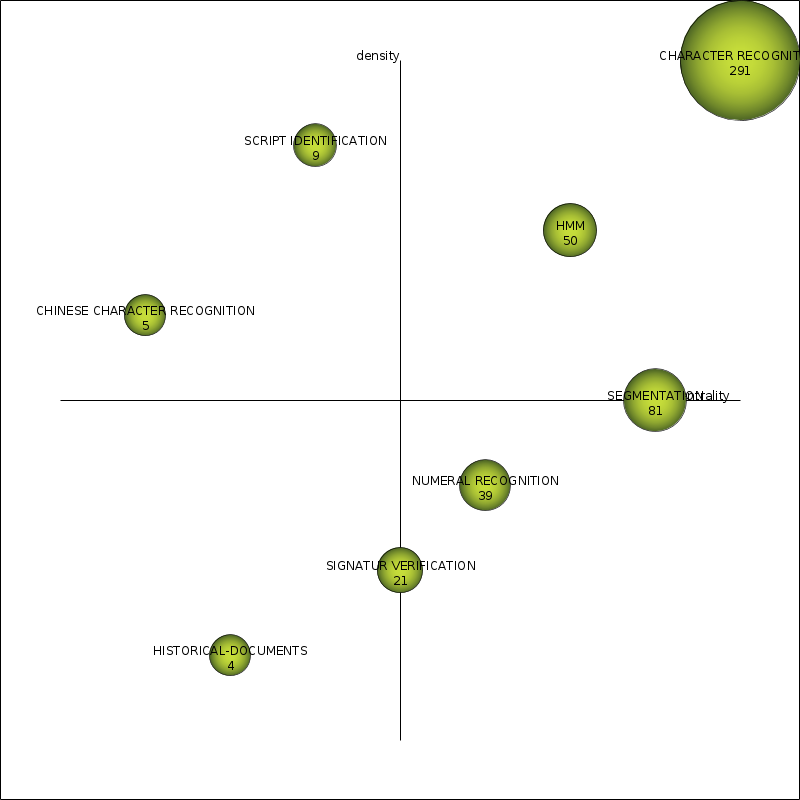 |
| coreDocuments-hIndex | 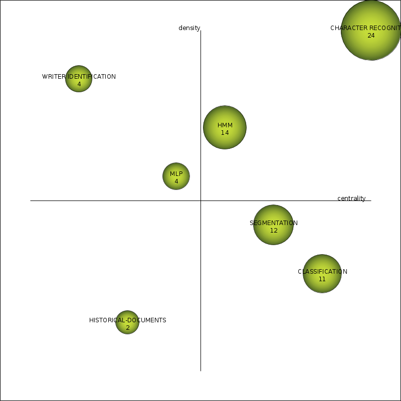 |
| coreDocuments-averageCitations | 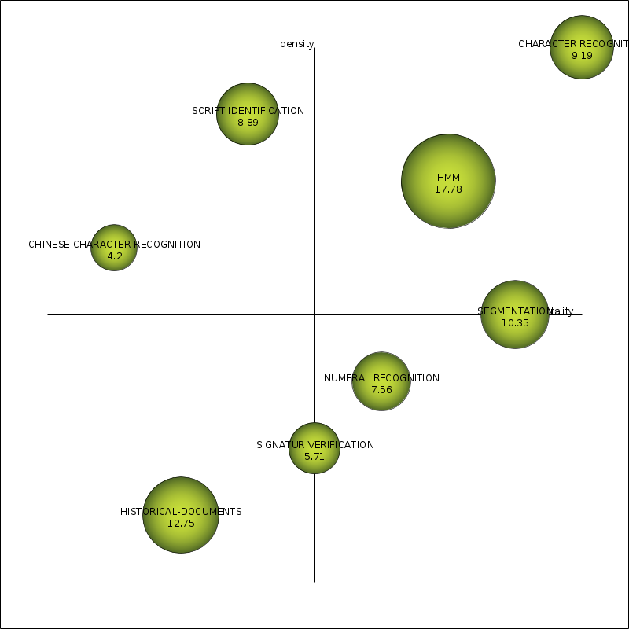 |
| coreDocuments-sumCitations | 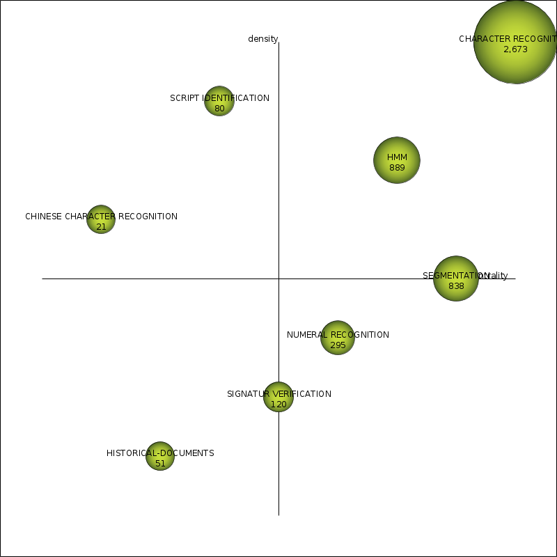 |
| unionDocuments-documentsCount | 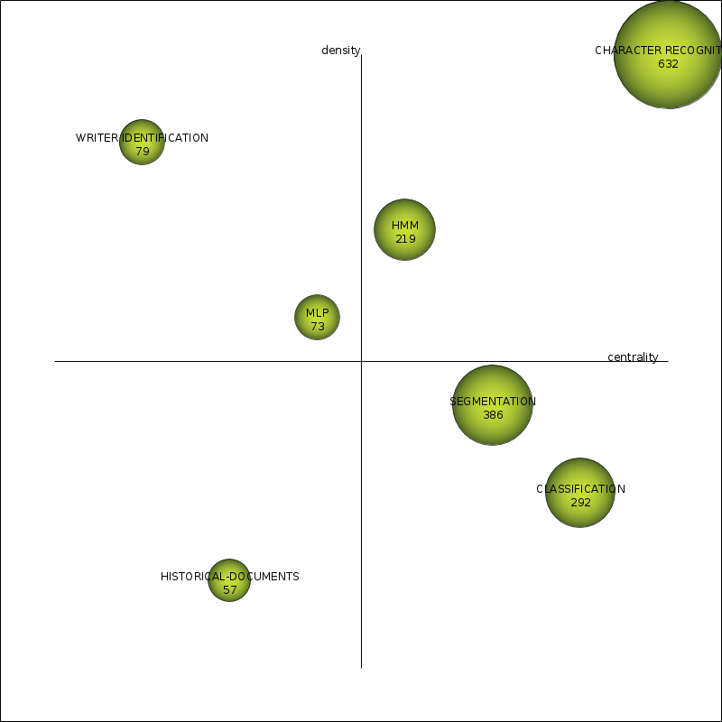 |
| unionDocuments-hIndex | 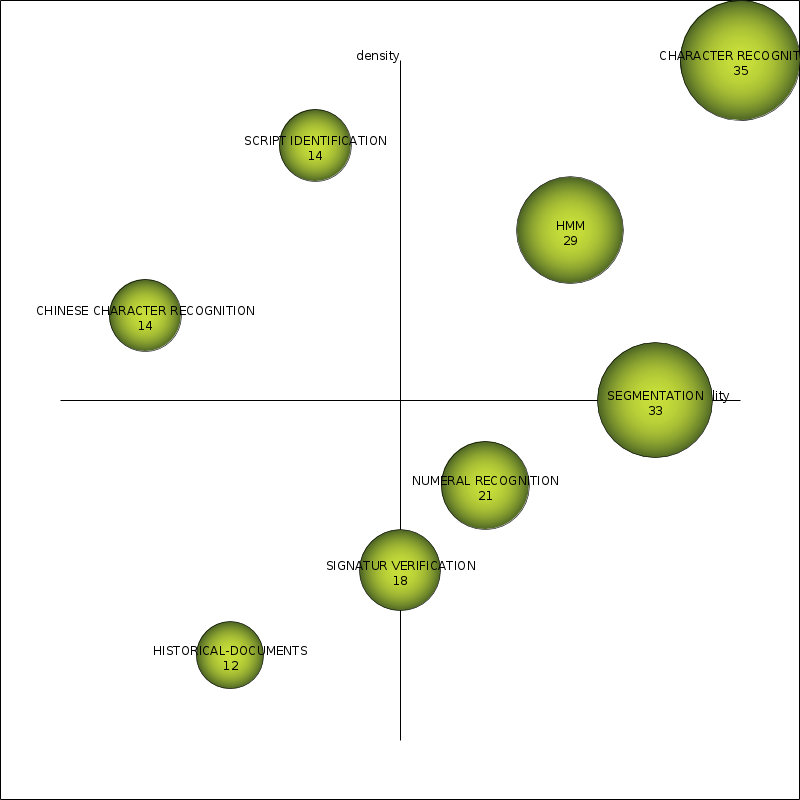 |
| unionDocuments-averageCitations | 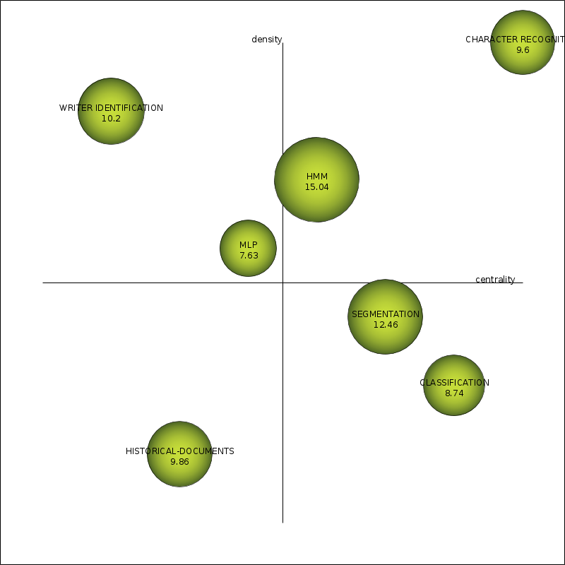 |
| unionDocuments-sumCitations | 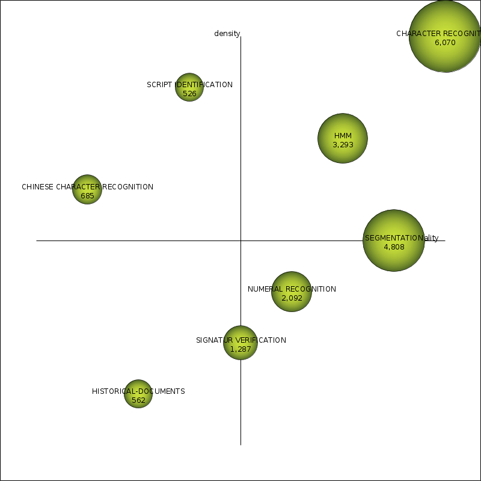 |
| Name | Centrality | Centrality range | Density | Density range |
| CHARACTER RECOGNITION | 24.42 | 1 | 7.87 | 1 |
| SEGMENTATION | 12.87 | 0.71 | 1.87 | 0.43 |
| HMM | 9.76 | 0.57 | 2.76 | 0.71 |
| CLASSIFICATION | 15.38 | 0.86 | 1.37 | 0.29 |
| WRITER IDENTIFICATION | 3.25 | 0.14 | 3.59 | 0.86 |
| MLP | 3.5 | 0.43 | 2.2 | 0.57 |
| HISTORICAL-DOCUMENTS | 3.39 | 0.29 | 0.63 | 0.14 |
| Name | coreDocumentsdocumentsCount | coreDocumentshIndex | coreDocumentsaverageCitations | coreDocumentssumCitations | unionDocumentsdocumentsCount | unionDocumentshIndex | unionDocumentsaverageCitations | unionDocumentssumCitations |
| CHARACTER RECOGNITION | 291 | 24 | 9.19 | 2,673 | 632 | 35 | 9.6 | 6,070 |
| SEGMENTATION | 81 | 12 | 10.35 | 838 | 386 | 33 | 12.46 | 4,808 |
| HMM | 50 | 14 | 17.78 | 889 | 219 | 29 | 15.04 | 3,293 |
| CLASSIFICATION | 46 | 11 | 8.41 | 387 | 292 | 22 | 8.74 | 2,551 |
| WRITER IDENTIFICATION | 10 | 4 | 6.3 | 63 | 79 | 14 | 10.2 | 806 |
| MLP | 9 | 4 | 3.33 | 30 | 73 | 10 | 7.63 | 557 |
| HISTORICAL-DOCUMENTS | 4 | 2 | 12.75 | 51 | 57 | 12 | 9.86 | 562 |
| Name | Cluster's network |
| CHARACTER RECOGNITION | 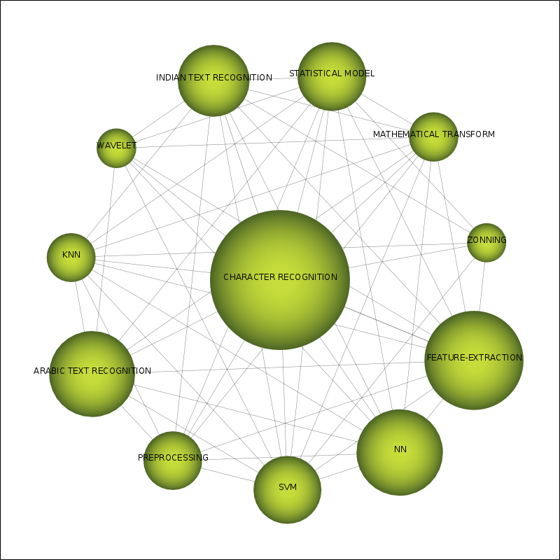 |
| SEGMENTATION | 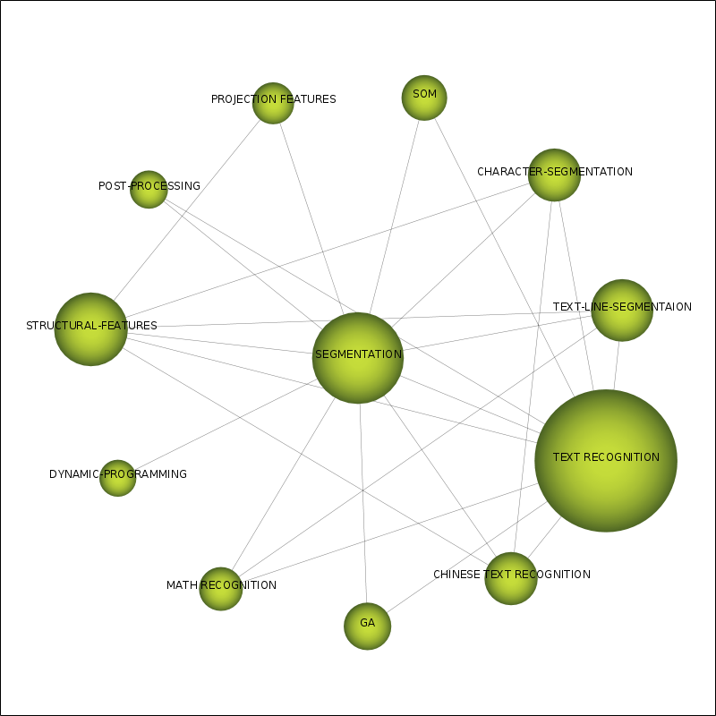 |
| HMM | |
| CLASSIFICATION | 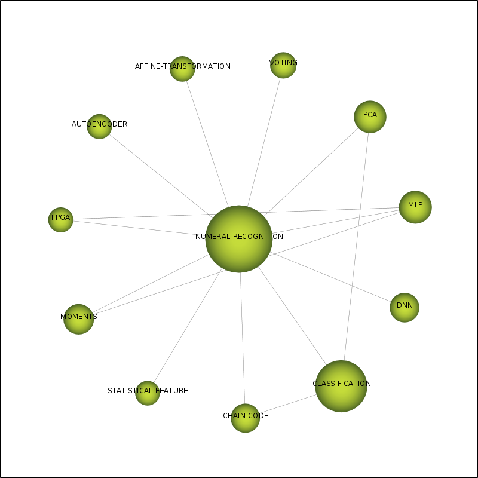 |
| WRITER IDENTIFICATION | |
| MLP | 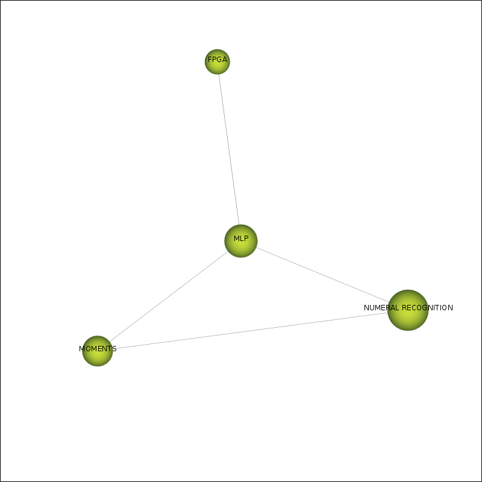 |
| HISTORICAL-DOCUMENTS |